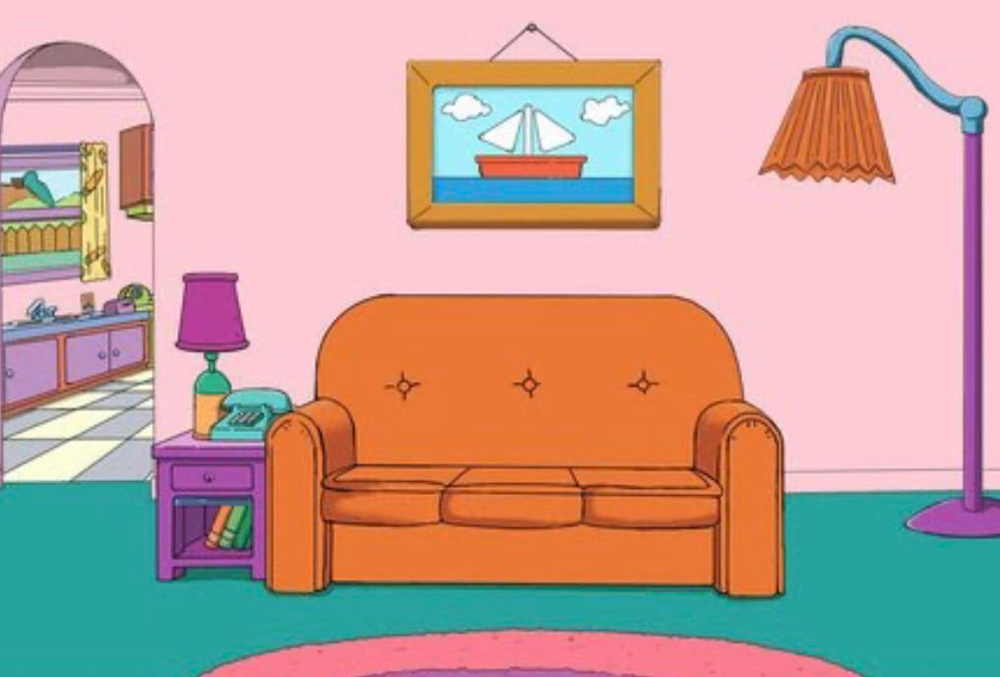
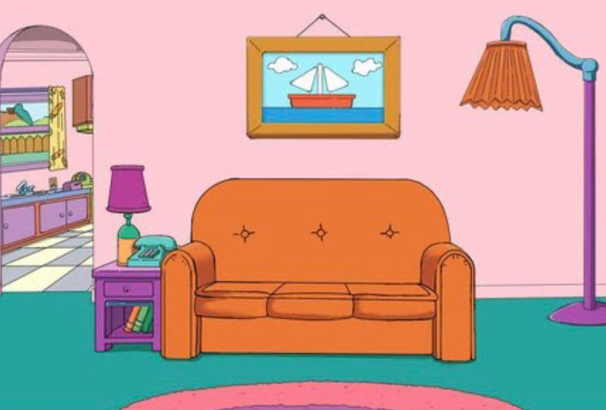

Henrique Elias é o tech lead. Mora na mesma cidade que eu. Tem formação anterior na área do direito.
Tiago Yoneda (é decasségui?) se cobra muito. Demonstra uma admiração quase submissa áqueles que julga superiores.
Diego Vinicius já trabalhava com hardware (metódo empiríco).
Kamila Ribeiro, a Kamis. Simpatíca e desastrada. Tira sarro de si. Nossa EmbaixaTryber.
Google.com